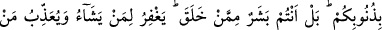
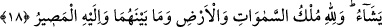

Hakk’ı an da gülyabânilerin seslerini mahvet
Nergis gibi olan gözünü bu gergese kapa
Hakk’ın zikri temizdir, temizlik gelince
Pislik pılını pırtısını toplayıp gider.
Zıtlar zıtlardan kaçar
Ziya parladı mı, gece kalmaz.
Ağıza Allah’ın temiz adı gelince de
Ne pislik kalır, ne gamlar, kederler
Rasûlullah (s.a.v.) şöyle buyurmuştur: “Ben, Allah’ın bana emrettiği beş şeyi size de
emrediyorum. Bunlar: İşitmek ve itâat etmek, cihad, hicret ve cemâattır. Kim
cemaatten bir karış ayrılırsa, tekrar geri dönene kadar İslâm ipini boynundan
çıkarmış olur.”[293]
18- Yahûdîler ve hristiyanlar «Biz Allah’ın oğulları ve sevgilileriyiz» dediler. De
ki: Öyleyse günahlarınızdan dolayı size neden azap ediyor? Doğrusu siz de O’nun
yarattığı insanlardansınız. O, dilediğini bağışlar ve dilediğine azap eder. Göklerde,
yerde ve ikisinin arasında ne varsa mülkiyeti Allah’a aittir. Sonunda dönüş de
ancak O’nadır.
“Yahûdîler ve hristiyanlar: “Biz Allah’ın oğulları ve sevgilileriyiz.” dediler.” Yani
yahûdîler “Biz Allah’ın oğlu Uzeyr (a.s.)’ın taraftarlarıyız.”, hristiyanlar da “Biz
Allah’ın oğlu Mesih’in taraftarlarıyız.” dediler. Bu hal, kralların akraba ve yakınlarının
övünürken “Kral biziz.” demeleri gibidir. Yâhut mânâ şöyledir: Biz çocukların
babalarına, babaların çocuklarına yakınlığı gibi Allah’ın yakınlarıyız. Bizimle O’nun
arasındaki sevgi ve öfke, babanın oğlunu sevmesi veya öfkelenmesi gibidir. Nasıl ki bir
baba, oğlunu bazen sever bâzen de ona kızarsa, Allah da bize karşı öyledir. Hülasa,
onlar kendilerinin Allah katında diğer insanlara karşı üstünlük ve meziyetlerinin
olduğunu iddia ediyorlardı. Allah bu âyetle onları reddetti.
Onları susturmak ve azarlamak için “De ki: Öyleyse günahlarınızdan dolayı size
neden azap ediyor?” Yani iddia ettiğiniz şey doğruysa neden Allah Teâlâ ölüm, esaret
ve hayvan şekline sokmak sûretiyle size dünyâda azap ediyor. Ayrıca siz, birkaç gün
buzağıya tapmanız sebebiyle âhirette o kadar bir müddet Allah’ın size azap edeceğini
de îtiraf ettiniz. Eğer iş sizin iddia ettiğiniz gibi olsaydı, yani Allah’ın sevgilileri